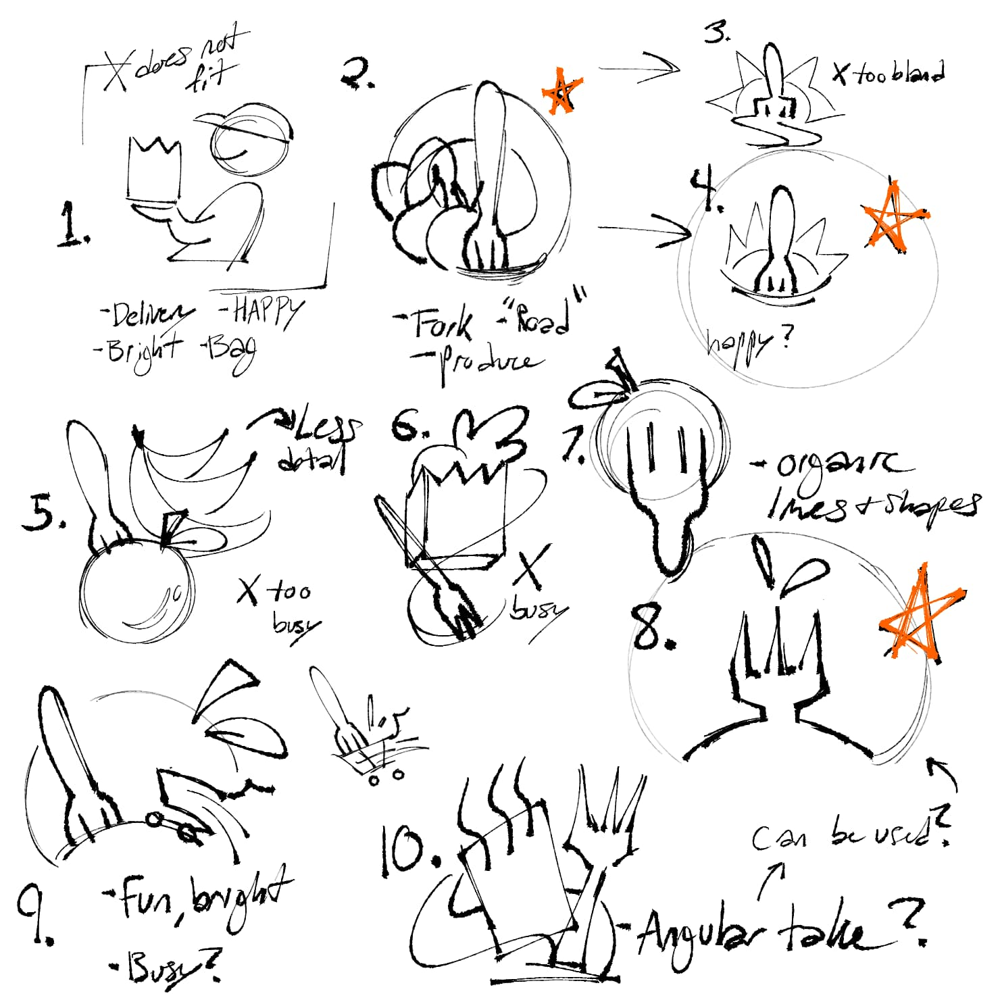
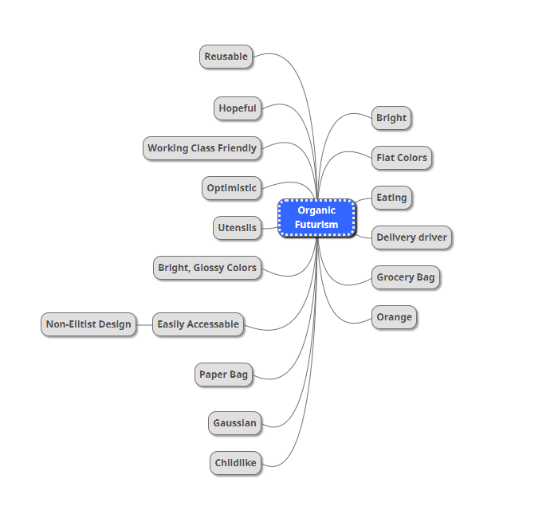
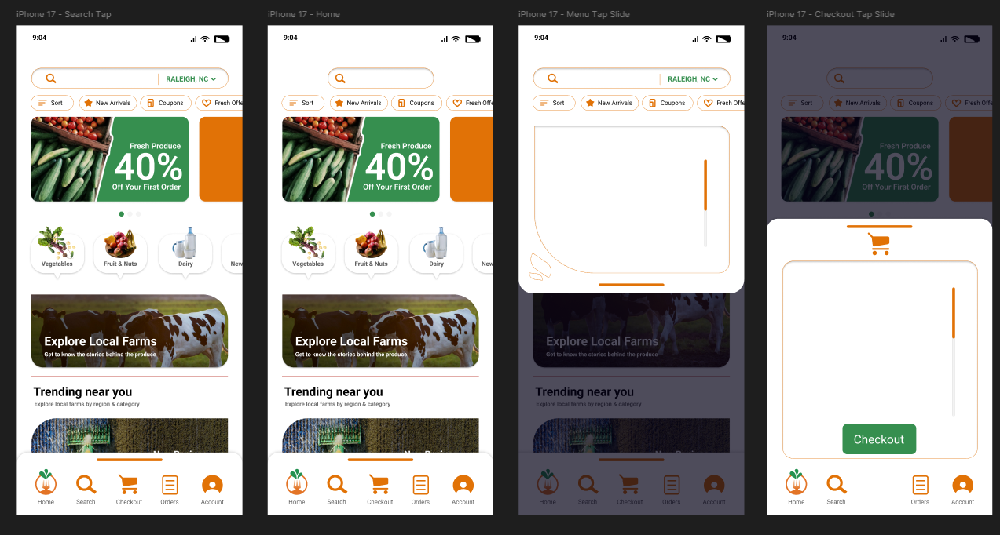

Fork in the Road Case Study
Fork in the Road
Case Study Details
This project focuses on creating interactive, micro-interactions for a mobile grocery shopping app. It includes research on existing apps to study micro-interactions and user experience patterns. The goal is to apply these insights into a functional and interactive app design later on in development!

Fork in the Road
Project Background
Before designing the app, research was conducted on commonly used apps to understand how micro-interactions improve usability. Each reference app demonstrated different ways to enhance interactivity and user flow. Stakeholders requested an app that feels organic yet modern. The design process involved sketching, wireframing, and prototyping to create a functional and engaging animations to pair with haptics and sound design in the future.

Fork in the Road
Observations & Insights
Successful micro-interactions also prioritize clear user flow, often paired with drawing in a user's attention. Micro-interactions like button feedback, momentum, and CSS transitions improved usability and engagement. Organized layouts and visual grouping help users navigate quickly. Small animations prototyped in Adobe XD and After Effects, such as bounce effects or highlighted icons, provide feedback and guide user actions.
Fork in the Road
Recommendations
Further iterations incorporated subtle micro-interactions like tap animations, swipe transitions, and animated menus. Keeping the layout simple and focused on key features to avoid distractions was a main priority. For example, a swipe gesture was added to the shopping cart icon for easy access, and buttons were designed with bounce effects to provide tactile feedback. Search bars would expand when focused on to reveal needed information only when needed at that time.

Fork in the Road
User Feedback
Users during testing would benefit from immediate visual feedback, such as button animations and responsive transitions. Features like swipe navigation and interactive menus made the experience feel smoother and more intuitive. After a few rounds of testing, clear organization showed to help users quickly find what they need. Engaging animations also helped maintain attention during atypical loading times and improve overall bounce rate with the app.